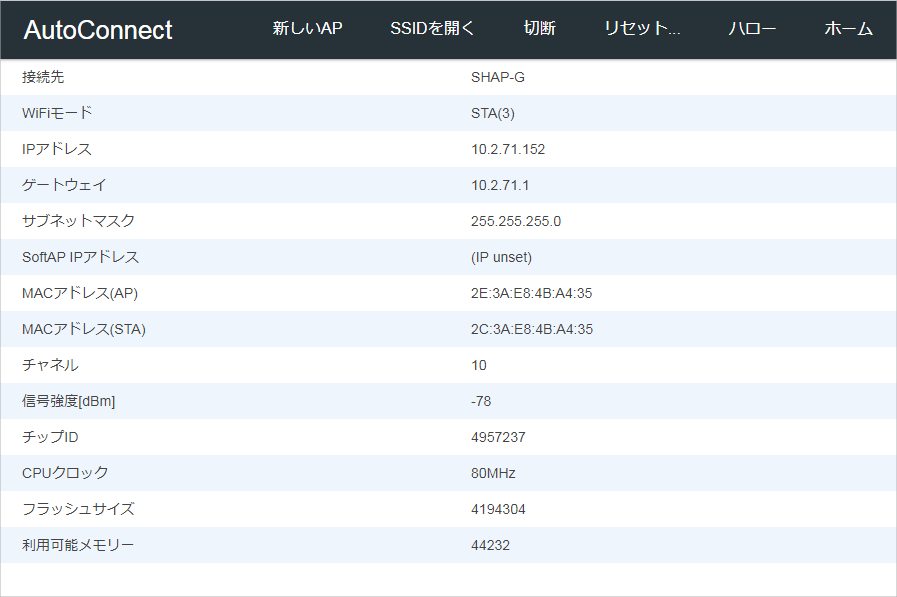
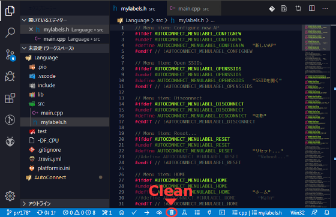

Change label text
Change the item's label text¶
You can change the text of AutoConnect menu items. The easiest way is to rewrite the header file directly in the library that defines the menu label. Advanced Usage section describes the detailed how to change the label text directly.
However, this way is less preferred as it modifies the library code and further affects the entire Arduino project you compile. So, here's how to change the label text for each Arduino project without directly modifying the library code. Using this method, you can also display the label text and fixed text on AutoConnect pages in your national language.
(e.g. in Japanese) 
Preparation¶
AutoConnect needs a definition file as c++ header (.h) to change the label text. It is used when your Arduino project is compiled, and there is no additional memory consumption due to changing the label text. This header file describes each fixed text of AutoConnect with the #define preprocessor directive.
The next thing you need is PlatformIO. PlatformIO is a very powerful environment for embedded development with multi-platform and multi-architecture build systems. And you can easily set up a PlatformIO for the Arduino development system as follows on your host machine.
- Microsoft Visual Studio Code
- PlatformIO IDE (included PlatformIO core)
Install PlatformIO and VSCode
Please refer to the official documentation for PlatformIO and VSCode installation.
The rest of this section assumes that you have a PlatformIO environment with VSCode as the front end that has installed on your host machine.
How to change the label text¶
Label text replacement header file¶
AutoConnect label texts are pre-assigned with a fixed string so that it can be determined at compile time. Their default definitions are in the AutoConnectLabels.h file that has all the replaceable label text defined by the #define directive.
| Label placed | Pre-defined text | ID (#define macro) |
|---|---|---|
| Menu item | Configure new AP | AUTOCONNECT_MENULABEL_CONFIGNEW |
| Open SSIDs | AUTOCONNECT_MENULABEL_OPENSSIDS | |
| Disconnect | AUTOCONNECT_MENULABEL_DISCONNECT | |
| Reset... | AUTOCONNECT_MENULABEL_RESET | |
| HOME | AUTOCONNECT_MENULABEL_HOME | |
| Update | AUTOCONNECT_MENULABEL_UPDATE | |
| Device info | AUTOCONNECT_MENULABEL_DEVINFO | |
| Button label | RESET | AUTOCONNECT_BUTTONLABEL_RESET |
| UPDATE | AUTOCONNECT_BUTTONLABEL_UPDATE | |
| Page title | Page not found | AUTOCONNECT_PAGETITLE_NOTFOUND |
| AutoConnect config | AUTOCONNECT_PAGETITLE_CONFIG | |
| AutoConnect connecting | AUTOCONNECT_PAGETITLE_CONNECTING | |
| AutoConnect connection failed | AUTOCONNECT_PAGETITLE_CONNECTIONFAILED | |
| AutoConnect credentials | AUTOCONNECT_PAGETITLE_CREDENTIALS | |
| AutoConnect disconnected | AUTOCONNECT_PAGETITLE_DISCONNECTED | |
| AutoConnect resetting | AUTOCONNECT_PAGETITLE_RESETTING | |
| AutoConnect statistics | AUTOCONNECT_PAGETITLE_STATISTICS | |
| Page:[statistics] row | Established connection | AUTOCONNECT_PAGESTATS_ESTABLISHEDCONNECTION |
| Mode | AUTOCONNECT_PAGESTATS_MODE | |
| IP | AUTOCONNECT_PAGESTATS_IP | |
| GW | AUTOCONNECT_PAGESTATS_GATEWAY | |
| Subnet mask | AUTOCONNECT_PAGESTATS_SUBNETMASK | |
| SoftAP IP | AUTOCONNECT_PAGESTATS_SOFTAPIP | |
| AP MAC | AUTOCONNECT_PAGESTATS_APMAC | |
| STA MAC | AUTOCONNECT_PAGESTATS_STAMAC | |
| Channel | AUTOCONNECT_PAGESTATS_CHANNEL | |
| dBm | AUTOCONNECT_PAGESTATS_DBM | |
| Chip ID | AUTOCONNECT_PAGESTATS_CHIPID | |
| CPU Freq. | AUTOCONNECT_PAGESTATS_CPUFREQ | |
| Flash size | AUTOCONNECT_PAGESTATS_FLASHSIZE | |
| Free memory | AUTOCONNECT_PAGESTATS_FREEMEM | |
| Page:[config] text | Total: | AUTOCONNECT_PAGECONFIG_TOTAL |
| Hidden: | AUTOCONNECT_PAGECONFIG_HIDDEN | |
| SSID | AUTOCONNECT_PAGECONFIG_SSID | |
| Passphrase | AUTOCONNECT_PAGECONFIG_PASSPHRASE | |
| Enable DHCP | AUTOCONNECT_PAGECONFIG_ENABLEDHCP | |
| Apply | AUTOCONNECT_PAGECONFIG_APPLY | |
| Page:[update] text | Updating firmware | AUTOCONNECT_TEXT_UPDATINGFIRMWARE |
| Select firmware: | AUTOCONNECT_TEXT_SELECTFIRMWARE | |
| Successfully updated, rebooting... | AUTOCONNECT_TEXT_OTASUCCESS | |
| Failed to update: | AUTOCONNECT_TEXT_OTAFAILURE | |
| Page:[connection failed] | Connection Failed | AUTOCONNECT_PAGECONNECTIONFAILED_CONNECTIONFAILED |
| Text | No saved credentials. | AUTOCONNECT_TEXT_NOSAVEDCREDENTIALS |
| Menu Text | Connecting | AUTOCONNECT_MENUTEXT_CONNECTING |
| Disconnect | AUTOCONNECT_MENUTEXT_DISCONNECT | |
| Failed | AUTOCONNECT_MENUTEXT_FAILED |
The definition of label text must conform to a certain coding pattern. Undefine with #undef the #define directive corresponding to the above IDs, and then redefine the ID with the replacement text. And surround it with #ifdef ~ #endif.
#ifdef AUTOCONNECT_MENULABEL_CONFIGNEW
#undef AUTOCONNECT_MENULABEL_CONFIGNEW
#define AUTOCONNECT_MENULABEL_CONFIGNEW "NEW_STRING_YOU_WISH"
#endif
You may not need to rewrite all definitions. It depends on your wishes and is sufficient that the above the include file contains only the labels you need.
Configuration of platformio.ini¶
You prepare its header file and place it in the src folder of the project folder. You can name the file whatever you like, but for the sake of explanation, let's say mylabels.h.
When you store mylabels.h containing the new label text definition in the src folder, your Arduino project folder structure should look like this:
<Project folder>
|-- <pio>
|-- <.vscode>
|-- <include>
|-- <lib>
|-- <src>
| |-- main.cpp
| |-- mylabels.h <-- Depends on the project
|-- <test>
|-- .gitignore
|-- .travis.yml
|-- platformio.ini
Then, open platformio.ini file and add new build_flags for including mylabels.h to override the label text.
build_flags = -DAC_LABELS='"${PROJECT_SRC_DIR}/mylabels.h"'
Just change the mylabels.h
Keep -DAC_LABELS='"${PROJECT_SRC_DIR}/YOUR_FILE_NAME"' when changing the above build_flags item to match your labels header file name.
After placing the mylabels.h file and add the build_flags, build the project with the replaced label text. You will see the AutoConnect screen with the new text replaced by mylabels.h.
Need clean-up before re-build with updated mylabels.h
When you have updated mylabels.h, you need deleting compiled library object files before build. Use Clean of a PlatformIO task on VSCode status bar.
